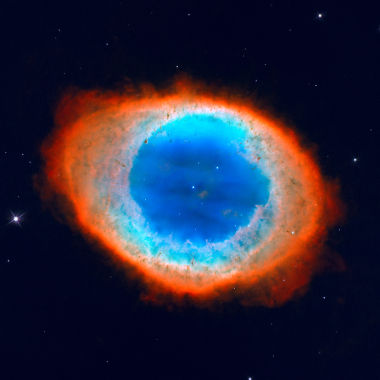

Nebulosas
Nebulosas são grandes nuvens encontradas no espaço interestelar formadas, majoritariamente, de poeira cósmica e gases, como hélio e hidrogênio.
Algumas nebulosas surgem a partir da explosão de estrelas massivas e que se encontram no ciclo final de suas vidas. Essa explosão, conhecida como supernova, lança a matéria da estrela para todas as direções, dando origem a uma ou mais nebulosas, que podem apresentar diferentes formatos e extensões, podendo medir desde o tamanho do Sol até algumas centenas de anos-luz.
Como as nebulosas são formadas?
As nebulosas podem ser formadas durante o evento final do ciclo de vida das estrelas (as supernovas), entretanto, uma nebulosa também pode surgir pela mera aglutinação de átomos pela ação da gravidade.
O espaço interestelar não é tão vazio quanto parece, de fato, sua densidade é de cerca de 1 átomo por centímetro cúbico (na Terra, a densidade de átomos é da ordem de 1019 átomos por cm³). Apesar de estarem extremamente “diluídos” no espaço, esses átomos de hidrogênio e hélio eventualmente podem atrair-se pela ação da força gravitacional.
Em certo ponto, um núcleo formado por essas partículas começa a ter temperaturas e pressões suficientes para realizar fusões entre átomos, que, por sua vez, levam à emissão de ondas eletromagnéticas capazes de excitar a massa de gás ao seu redor, que passa a emitir radiação eletromagnética em comprimentos de ondas visíveis.

Quais são os tipos de nebulosas?
Existem diferentes tipos de nebulosas, com diferentes tamanhos e características. Os principais tipos de nebulosas são:
- Nebulosas de emissão;
- Nebulosas de reflexão;
- Nebulosas escuras;
- Nebulosas planetárias.